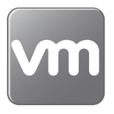
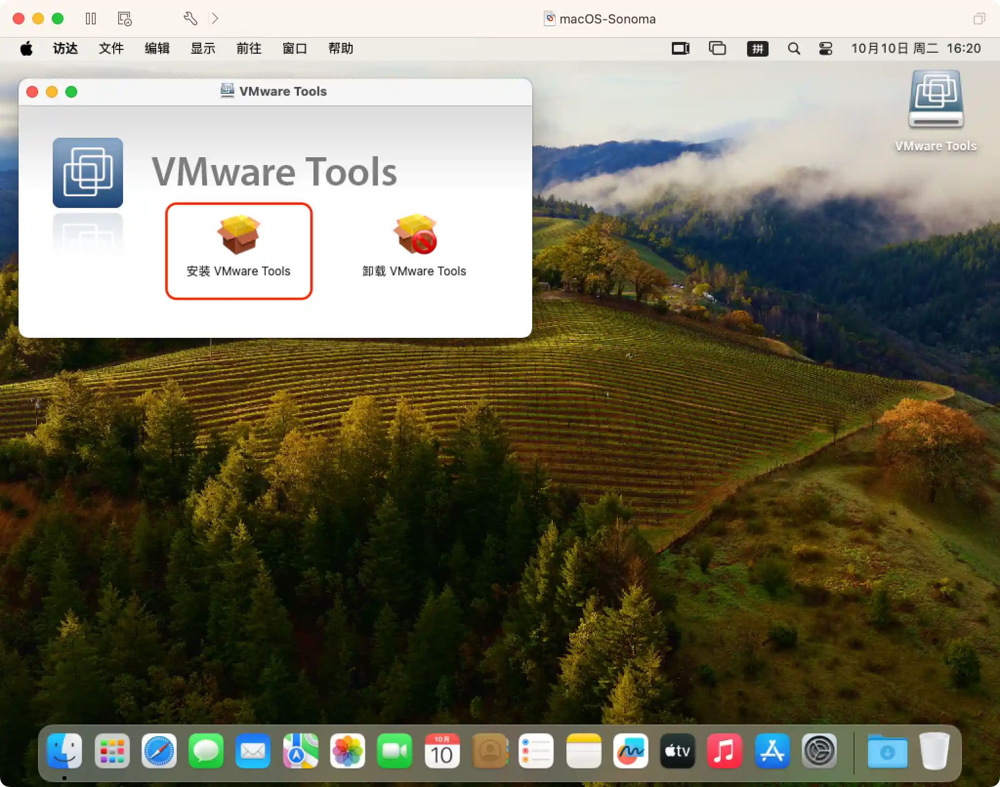
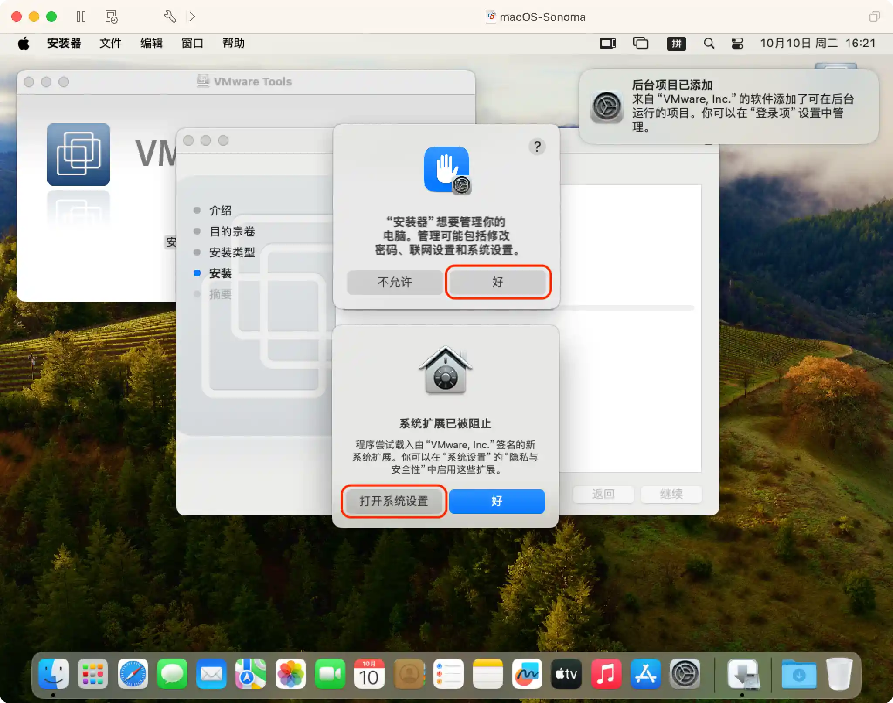
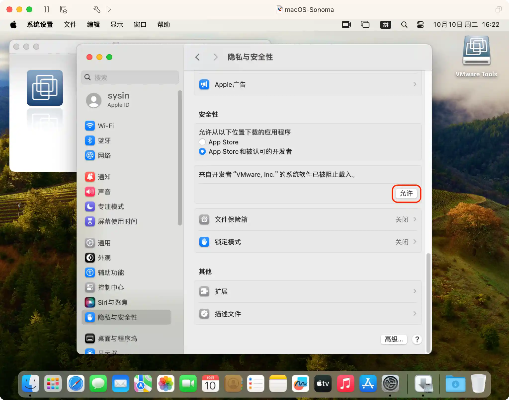
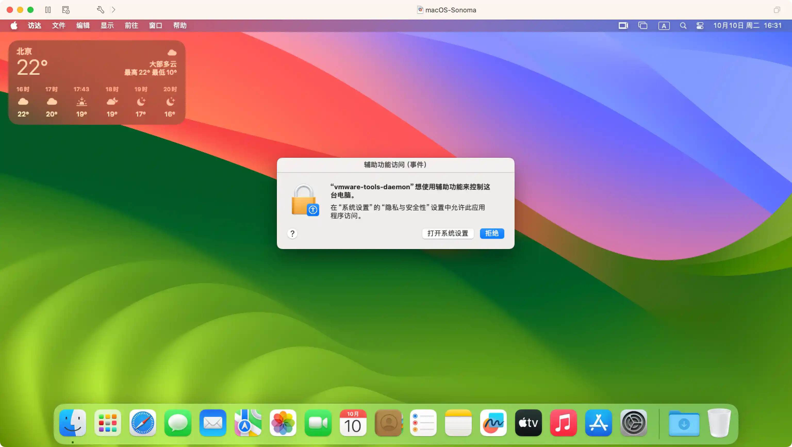
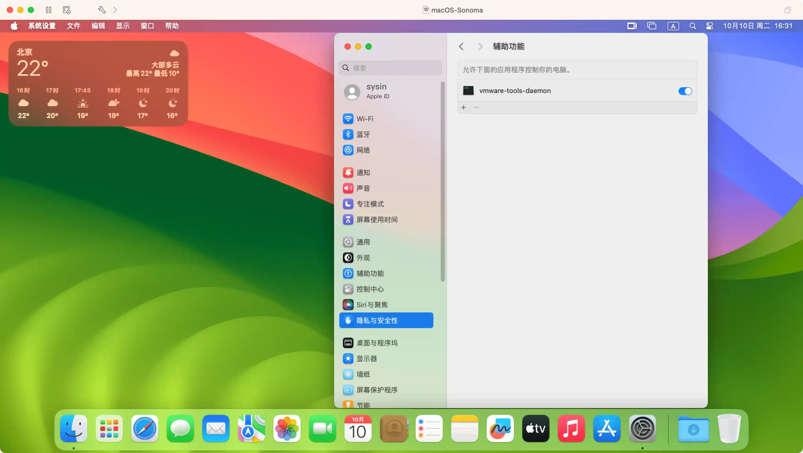

请访问原文链接：如何安装 VMware Tools (macOS, Linux, Windows) 查看最新版。原创作品，转载请保留出处。
作者主页：sysin.org
如何安装 macOS、Linux、Windows 和 FreeBSD 虚拟机中安装 VMware Tools。

VMware Tools 简介
VMware Tools 中包含一系列服务和模块，可在 VMware 产品中实现多种功能，从而使用户能够更好地管理客户机操作系统，以及与客户机操作系统进行无缝交互。
VMware Tools 具备以下功能：
- 将消息从主机操作系统传递到客户机操作系统。
- 将客户机操作系统作为 vCenter Server 及其他 VMware 产品的组成部分进行自定义。
- 运行有助于实现客户机操作系统自动化运行的脚本。这些脚本在虚拟机的电源状态改变时运行。
- 在客户机操作系统与主机操作系统之间同步时间。
VMware Tools 生命周期管理为 VMware Tools 的安装和升级提供了一种简单而可扩展的方式。它包含多项功能增强和与驱动程序相关的增强，并支持新的客户机操作系统。
您必须运行最新版本的 VMware Tools，或使用随 Linux 操作系统发行版一同发布的 open-vm-tools。尽管客户机操作系统在未安装 VMware Tools 的情况下也可以运行 (sysin)，但是要使用最新的功能和更新，您必须在客户机操作系统中运行最新版本的 VMware Tools。
可以将虚拟机配置为在每次打开虚拟机电源时自动检查并应用 VMware Tools 升级。
安装 VMware Tools 是创建新的虚拟机过程的一部分，而升级 VMware Tools 是使虚拟机符合最新标准过程的一部分。尽管客户机操作系统在未安装 VMware Tools 的情况下仍可运行，但许多 VMware 功能只有在安装 VMware Tools 后才可用。安装 VMware Tools 以后，套件中的实用程序会提高虚拟机中客户机操作系统的性能和改善虚拟机管理。
VMware Tools 安装程序是 ISO 映像文件。客户机操作系统中的 CD-ROM 会检测 ISO 映像文件。每种类型的客户机操作系统（包括 Windows、Linux 和 Mac OS X）具有一个 ISO 映像文件。在选择命令以安装或升级 VMware Tools 时，虚拟机的第一个虚拟 CD-ROM 磁盘驱动器暂时连接到客户机操作系统的 VMware Tools ISO 文件。
macOS 虚拟机
官方指南
如果在具有 Apple 标签的电脑上使用 VMware Fusion 或 ESXi，您可以创建 Mac OS X Server（10.5 或更高版本）虚拟机并安装 VMware Tools。
选择菜单命令以在客户机操作系统中装载并打开 VMware Tools 虚拟光盘。
VMware 产品 菜单命令 vSphere Client 右键点按虚拟机，选择客户机操作系统 > 安装（或升级）VMware Tools…，然后选择交互式 Tools 安装或交互式 Tools 升级 Fusion 虚拟机 > 安装（或升级）VMware Tools 在 VMware Tools 虚拟光盘上打开安装 VMware Tools，按照安装程序助理中的提示进行操作，然后点按好 (sysin)。
非官方支持
运行于第三方硬件（非 Apple Mac）上的 VMware Workstation 或 ESXi，创建 macOS 虚拟机需要 Unlocker，参看：
- VMware vSphere：
- VMware ESXi 9 or with driver & vCenter Server 9 & VCF Operations 9
- VMware ESXi 8 or with driver & vCenter Server 8
- VMware ESXi 7 or with driver & vCenter Server 7
- macOS：VMware Fusion
- Linux：VMware Workstation for Linux
- Windows：VMware Workstation for Windows
下载地址：VMware Tools 12.5.4 下载 - 客户机操作系统无缝交互必备组件
| VMware 产品 | 菜单命令 |
|---|---|
| vSphere Client | 将 darwin.iso 上传到 Datastore 目录下，编辑虚拟机属性，CD/DVD 驱动器，选择并浏览到 darwin.iso。或者将 darwin.iso 上传 /vmimages/tools-isoimages/ 目录下，通过右键点按虚拟机，选择客户机操作系统 > 安装（或升级）VMware Tools… |
| Workstation Pro | 虚拟机 > 安装（或升级）VMware Tools。或者手动下载 darwin.iso，编辑虚拟机属性，CD/DVD 驱动器，选择并浏览到 darwin.iso。 |
以下具体步骤也同样适用于 Fusion。
此时 macOS 桌面将出现 VMware Tools 卷宗图标，双击图标，然后在打开的画面中选择“安装 VMware Tools”，根据提示进行安装即可。

注意以下两点：
允许系统扩展
根据提示点击 “打开系统设置”。

此时在 “系统设置 - 隐私与安全性” 页面，点击 “允许”，根据提示重启系统完成安装。

允许同主机间拖拽共享文件
将宿主机中的文件拖拽到客户机（或者反向操作）会出现提示 “vmware-tools-deamon” 想使用辅助功能来控制这台电脑，点击 “打开系统设置”。

此时将自动打开 “系统设置 - 隐私和安全性 - 辅助功能” 页面，点按 vmware-tools-deamon 即可。

Linux 虚拟机
现代 Linux 使用 open-vm-tools
现代 Linux 发行版使用开源的 open-vm-tools，内置于主流的 Linux 发行版自带的软件包管理系统中。并且一些发行版检测到 VMware 虚拟机安装时，会自动安装该组件。手动安装示例如下 (sysin)：
Debian 11/12，Ubuntu 20.04/22.04
1 | Ubuntu 16.04 在 VMware 软件中安装系统时已经自动安装了 open-vm-tools（18.04、20.04、22.04 相同） |
查看状态如下：
1 | 查看版本 |
RHEL 8/AlmaLinux 8/Rocky Linux 8，RHEL 9/AlmaLinux 9/Rocky Linux 9
该项配置兼容 RHEL 7、8、9 系列。
在系统安装时候勾选了 “Guest Agent”（AlmaLinux 和 Rocky Linux 都无此选项），将自动安装 open-vm-tools。
1 | 手动安装 open-vm-tools： |
其他发行版也是类似的方法，使用您熟悉的软件包管理命令操作即可。
传统 Linux 虚拟机安装方式
适用于 Linux 虚拟机的 VMware Tar 工具的功能已在版本 10.3.10 中被冻结，因此 Workstation Player 中包含的 tar 工具 (linux.iso) 为 10.3.10 版本，且不会进行更新。由于此更改，系统为以下 Linux 虚拟机禁用了 “安装 / 更新 / 重新安装 VMware Tools” 菜单：
- tar 工具尚不正式支持现代 Linux 发行版。
- Red Hat Enterprise Linux 8 及更高版本。
- CentOS 8 及更高版本。
- Oracle Linux 8 及更高版本。
- SUSE Linux Enterprise 15 及更高版本。
- Linux 内核版本为 4.0 或更高版本，且安装的 Open VM Tools 版本为 10.0.0 或更高版本。
- Linux 内核版本为 3.10 或更高版本，且安装的 Open VM Tools 版本为 10.3.0 或更高版本。
对于安装了 Open VM Tools 但不在上述范围内的 Linux 虚拟机，将启用安装 / 更新 / 重新安装 VMware Tools 菜单，以便您可以在 Open VM Tools 上安装捆绑的 tar 工具以获得共享文件夹 (HGFS) 功能支持。
对于 Open VM Tools 不支持的旧版 Linux 虚拟机，请执行以下步骤来安装 tar 工具。
在客户机操作系统中选择菜单命令以装载 VMware Tools 虚拟磁盘。
| VMware 产品 | 操作 |
|---|---|
| vSphere Client | 右键单击虚拟机，然后选择客户机操作系统 > 安装 VMware Tools… 或客户机操作系统 > 升级 VMware Tools… |
| Fusion | 虚拟机 > 安装（或升级）VMware Tools |
| Workstation Pro | 虚拟机 > 安装（或升级）VMware Tools |
| Workstation Player | Player > 管理 > 安装（或升级）VMware Tools |
简言之，挂载 iso 后，复制其中的 VMwareTools-x.x.x-yyyy.tar.gz 并解压，然后运行安装程序（sudo ./vmware-install.pl）即可。
Windows 虚拟机
在客户机操作系统中选择菜单命令以装载 VMware Tools 虚拟磁盘。
| VMware 产品 | 操作 |
|---|---|
| vSphere Client | 右键单击虚拟机，然后选择客户机操作系统 > 安装 VMware Tools… 或客户机操作系统 > 升级 VMware Tools… |
| Fusion | 虚拟机 > 安装（或升级）VMware Tools |
| Workstation Pro | 虚拟机 > 安装（或升级）VMware Tools |
| Workstation Player | Player > 管理 > 安装（或升级）VMware Tools |
如果使用 vCenter Server 并执行升级或重新安装，请在安装 / 升级 VMware Tools 对话框中选择交互式 Tools 安装或交互式 Tools 升级，然后点按好。
如果首次安装 VMware Tools，请在 “安装 VMware Tools” 信息页中点按好。
- 如果在客户机操作系统中为 CD-ROM 驱动器启用了自动运行，则会启动 VMware Tools 安装向导。
- 如果未启用自动运行，要手动启动向导，请点按 CD-ROM 驱动器 中的 setup.exe 进行安装。对于 64 位 Windows 客户机操作系统，请使用 setup64.exe 进行安装。
FreeBSD 虚拟机
FreeBSD 同一般 Linux 发行版略有差异，这里单独说明一下。
For a desktop system (with X11) : pkg install open-vm-tools
For a server system (no X11) : pkg install open-vm-tools-nox11
1 | pkg search open-vm-tools |
服务器直接安装：pkg install open-vm-tools-nox11
下载地址：VMware Tools 12.5.4 下载 - 客户机操作系统无缝交互必备组件

文章用于推荐和分享优秀的软件产品及其相关技术，所有软件默认提供官方原版（免费版或试用版），免费分享。对于部分产品笔者加入了自己的理解和分析，方便学习和研究使用。任何内容若侵犯了您的版权，请联系作者删除。如果您喜欢这篇文章或者觉得它对您有所帮助，或者发现有不当之处，欢迎您发表评论，也欢迎您分享这个网站，或者赞赏一下作者，谢谢！
 支付宝赞赏
支付宝赞赏  微信赞赏
微信赞赏赞赏一下
敬请注册！点击 “登录” - “用户注册”（已知不支持 21.cn/189.cn 邮箱）。 请勿使用联合登录（已关闭）。